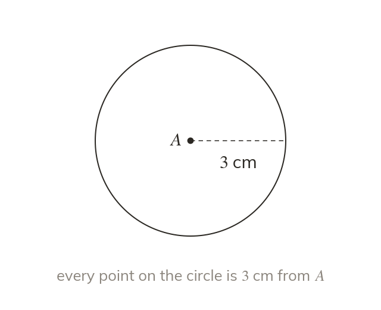

A locus is a set of points
A locus is every point that obeys a rule. Equidistant means the same distance from. Compasses draw all points one fixed distance from a point: a circle.
A locus is every point that obeys a rule, and equidistant means the same distance from. Compasses draw the locus of points one fixed distance from a point: a circle.